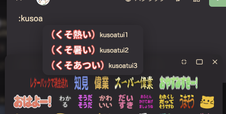

Misskey TL filter
このままでは動きません
お使いのブラウザでは動作しません。
Firefoxの方は設定を変更することで利用できます。
アドレスバーに
about:config
を入力
警告が出るがOKを押して進む
設定の中から
layout.css.has-selector.enabled
を探す
(画面上の検索バーに入力すると出てきます)
該当する設定をダブルクリックし、値を
"true"
にする
Firefoxを再起動
ホーム
RNを非表示
引用を非表示
NSFWを非表示
CWを非表示
メディア非表示
ローカル
RNを非表示
引用を非表示
NSFWを非表示
CWを非表示
botを非表示
リスト
RNを非表示
引用を非表示
NSFWを非表示
CWを非表示
メディア非表示
ソーシャル
RNを非表示
引用を非表示
NSFWを非表示
CWを非表示
botを非表示
グローバル
RNを非表示
引用を非表示
NSFWを非表示
CWを非表示
ローカル非表示
ロール
RNを非表示
引用を非表示
NSFWを非表示
CWを非表示
メディア非表示
すべてのTLで適用される設定
チャンネルノートを非表示
他のサーバーからのノートを非表示
同一サーバー内のノートを非表示
画像、動画をすべて非表示
入力されたユーザーIDのノートを問答無用ですべて非表示にします。
複数人いる場合は、「,」で区切って入力してください
例: ikakonbu,syuilo,abc123
ユーザーミュート
入力されたユーザーのRenoteだけを非表示にします。
複数人いる場合は、「,」で区切って入力してください
例: ikakonbu,syuilo,abc123
ユーザーRenoteミュート
その他の設定
フォロー、フォロワー数を隠す
投稿時、リアクション時の絵文字画面を変えます。
下の写真のように見やすくなります

横長絵文字を見やすくする
他のサーバーでも動かせるようになります。
下にある「標準設定で動くサーバー一覧」
にあるサーバーでは、そのまま動きます。
複数サーバある場合は、「,」で区切って入力してください
例: misskey.art,misskey.cf
Misskey.io以外での動作は保証していません。
動いたらラッキー程度に考えてください
他のサーバでも動かす
今の設定をCSSとして出力します。
出力されたコードをスマホでコピーして、設定→全般→カスタムCSS
に貼り付けることで、スマホでも同じフィルタリングをかけられます。
今の設定をCSSに
出力する
開発者Misskey
Github(説明書)
標準設定で動作するするサーバー一覧
こんな機能欲しい！とかここ直して欲しいとかはぜひ連絡ください
当ソフトウェアは個人が趣味で作っています。バグなどがあるかもしれないので、もし動かなければご報告ください
ver1.1